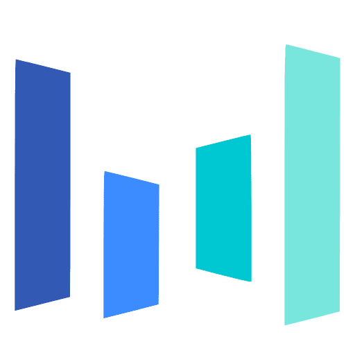

About Me
Hello! I am Chen Lin, a graduate student at the School of Computer Science, East China Normal University (ECNU), supervised by Prof. Wei Zhang. My current research focuses on LLM post-training, especially on-policy distillation (OPD).
I am also passionate about algebra and music. I warmly welcome conversations about research, music, or life in general. If you have any questions or ideas to discuss, please feel free to contact me.
Open to internship opportunities: I am currently seeking research or engineering internship opportunities related to LLM post-training, distillation, and efficient model adaptation. Please feel free to reach out via email if there is a potential fit.
Education

East China Normal University
M.S. in Computer Science
2025 - 2028
Zhejiang Normal University
B.S. in Computer Science
2021 - 2025
Experience

ByteDance
Intern on Prompt Engineering
2024.9 - 2024.12